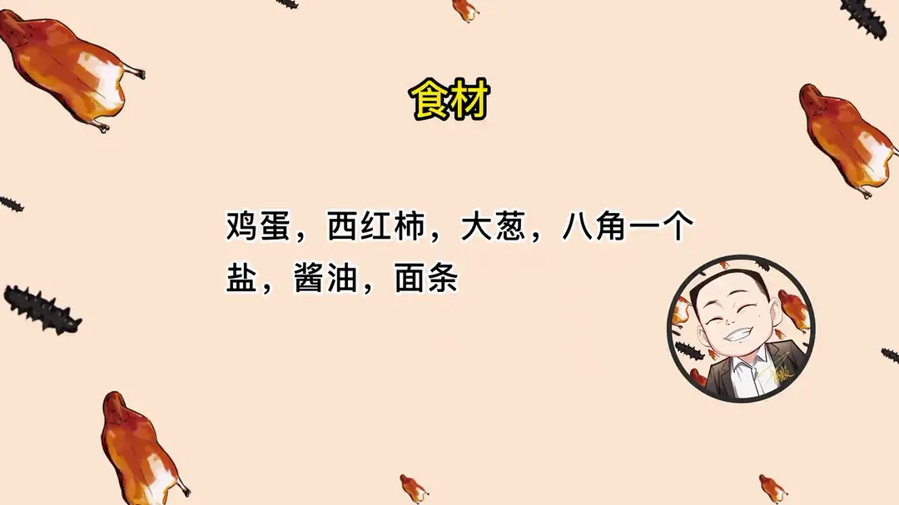
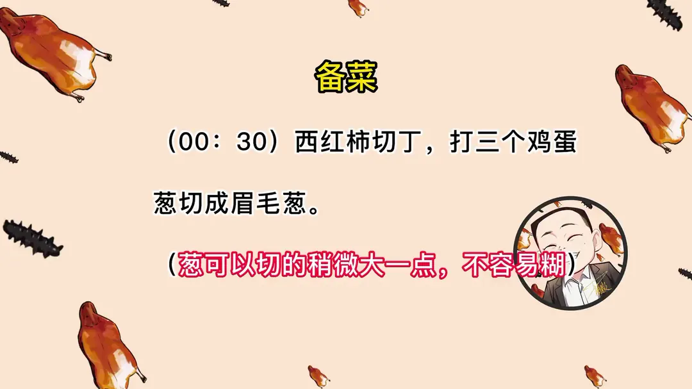
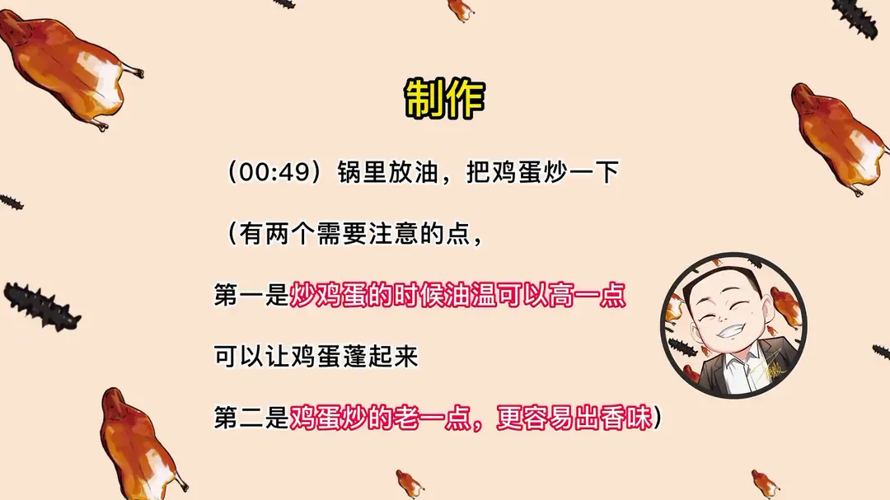
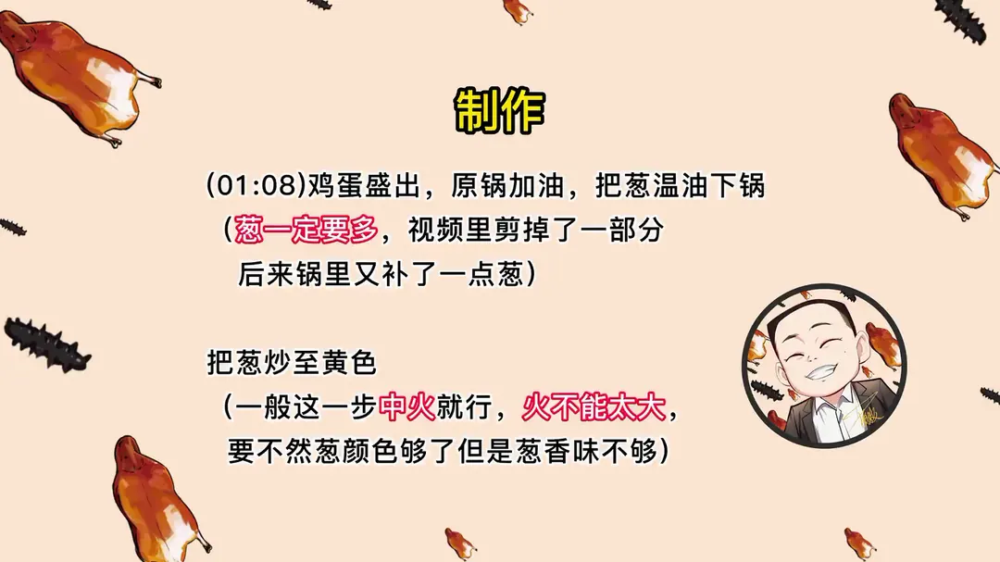
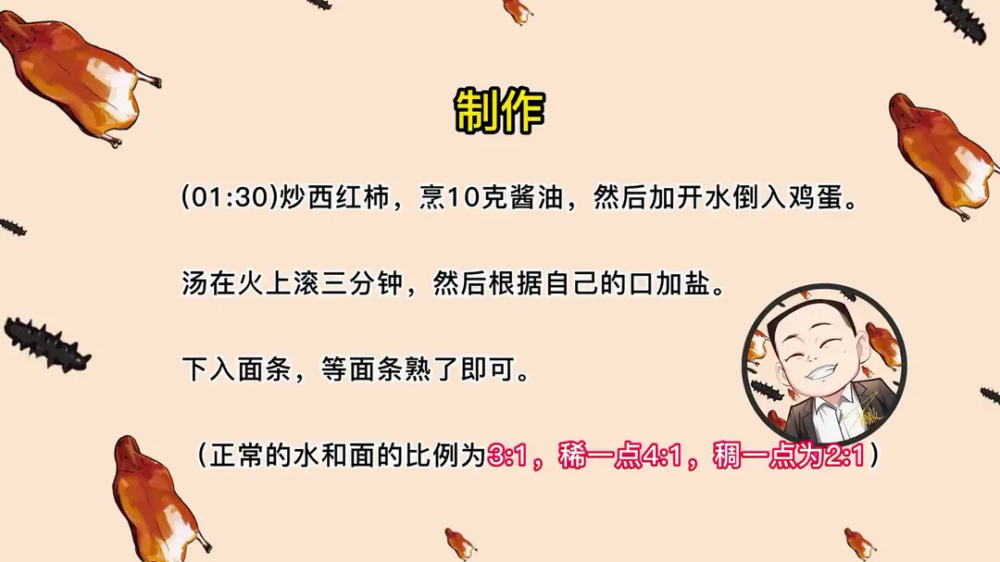

炝锅面
隋卞一做。主料鸡蛋、西红柿和大葱。关键在于葱要多、温油中火炒至黄色出香，再炒西红柿烹酱油，加开水滚汤后下面。
原视频：https://www.bilibili.com/video/BV1e8411u7uB
食材
鸡蛋、西红柿、大葱 等 7 样
| 类别 | 用料 | 用量 |
|---|---|---|
| 主料 | 鸡蛋 | 3 个 |
| 主料 | 面条 | 适量 |
| 配料 | 西红柿 | 适量 |
| 配料 | 大葱 | 适量 |
| 配料 | 八角 | 1 个 |
| 调味 | 盐 | 适量 |
| 调味 | 酱油 | 10g |
步骤
- 备料：西红柿切丁，打三个鸡蛋；葱切成眉毛葱，可以切得稍微大一点，不容易糊。
- 炒鸡蛋：锅里放油，把鸡蛋炒一下。油温可以高一点，让鸡蛋蓬起来；鸡蛋要炒得老一点，更容易出香味。
- 炒葱：鸡蛋盛出，原锅加油，把葱温油下锅（葱一定要多），把葱炒至黄色。这一步一般中火就行，火不能太大，要不然葱颜色够了但是葱香味不够。
- 炒西红柿：炒西红柿，烹 10g 酱油，然后加开水，倒入鸡蛋。
- 滚汤调味：汤在火上滚三分钟，然后根据自己的口加盐。
- 下面：下入面条，等面条熟了即可。
小贴士
- 正常的水和面的比例为 3:1，稀一点 4:1，稠一点为 2:1。
- 葱一定要多，切得稍大一点不容易糊；炒葱用中火，火太大葱颜色够了但香味不够。
- 炒鸡蛋油温高一点让蛋蓬起来，炒得老一点更容易出香味。
讲解要点
难度：★☆☆☆☆（有手就会，唯一要练的是把葱煸黄而不煸糊）
为什么这么做
- 葱要用眉毛葱、切粗一点：斜刀切出的面大、耐煸，切太细还没出香味就先糊了。
- 炒鸡蛋油温高、炒老一点：高温让蛋液起泡蓬起，炒老才出蛋香，太嫩只有嫩味没有香味。
- 葱温油下锅、中火煸到发黄：炝锅的香味是葱在油里慢慢煸到美拉德反应出来的；大火葱色够了，香味还没出来。
- 葱一定要多：这碗面的主体香味就是葱，葱少了只剩咸味。
- 烹酱油、加开水再滚三分钟：酱油遇热锅一烹才出酱香；大火滚汤让鸡蛋香和葱香融进汤里。
- 不加味精鸡精：葱、蛋、酱油的复合鲜味已经够，加了反而遮掉葱香；只放盐最干净。
- 先滚汤再下面：面条在带味的汤里煮，会把汤味吸足，面条本身也好吃。
容易翻车
- 葱下锅前一定要擦干，葱上带水煸不出香味，案板也要擦干。
- 水和面的比例按口味调：3:1 正常，4:1 稀一点，2:1 煮完比较黏稠。
热评补充
- 葱尽量只用葱白，葱绿容易焦，不影响味道但影响卖相；大约两根大葱的葱白才是视频里的量。
- 酱油从锅边淋入才有炝锅香；八角跟葱一起下锅炒，不用捞出来。
原片尾卡





原片文案
AI 字幕校准稿
其实原来在单位的时候，那些首长最爱吃的不是燕翅鲍、海参鱼肚之类的，最爱吃的就是今天要教你们的这个炝锅面。需要准备的原料很简单：西红柿、鸡蛋、葱，还有面条。不需要详细的配比，也不用记克数，今天这个真的是有手就能学得会。
西红柿先切丁，这样更好地利用原材料、该用的地方都用上。刚才我们也打了三个鸡蛋。葱就切这种斜刀，叫眉毛葱，斜着切就行，稍微粗一点，煸的时候容易出香味。开火，咱们放油，油稍微多一点。炒鸡蛋的油温需要高一些，下去之后能起泡就行，把勺子给它扒拉散了，炒得稍微老一点，太嫩了不出香味。
再次加入油，倒入我们准备好的大葱，温油下锅就行。这个炝锅面要想好吃，一定得放大量的葱。大葱煸到一定火候，它才能出那种很浓的炝锅的味，我是反复试验过，一定要给它煸黄，看这种颜色就行了。西红柿倒进去，然后倒入酱油，下锅一烹，加水，把鸡蛋倒进去。
这个得大火滚，跟鲁菜的那个鸡蛋煲汤还有一点点像，就是这意思。一定要大火滚，鸡蛋的香味和葱味在汤里边混为一体，你再煮这个面条，面条会把这汤味吸得很足，所以就是很香。把盐加进去，下面条。味精、鸡精什么都不用放，不用放。大厨这儿要放一点点胡椒粉，好吧，都告诉你们。有手就会，没有那么复杂的过程。煮到什么程度呢？面条熟了即可，不确定自己先尝尝。你们喜欢稀一点还是稠一点？稀一点再加点水。水跟面的量：愿意喝汤的，汤是水的三分之一，这样连汤带面都有了；要吃稍微干一点的，就是二比一，煮完以后比较粘稠。面条好了，出锅，炝锅面。
吃了以后感觉像是一捆大葱来你嘴巴里面串门，很简单、很纯真，然后鸡蛋的味道拌着那种特别浓的葱香味。咸鲜味好吃，只放盐的味道还比较符合它的鸡蛋味，鸡蛋味道好香。它比我想象的要好吃，我刚才还问你放不放味精、放不放鸡精，这还真的什么都不用放。太好吃了，今天的加班是值得的。
其实做菜做得好吃，不能只靠食材的堆叠，特别是各种调味料的对比。只要你掌握每个食材的特性，你做出来的菜应该都会很好吃。这道菜一定得在家试，食材好吃，而且很简单很简单。这你们要是再说学不会，那你们就不如我。